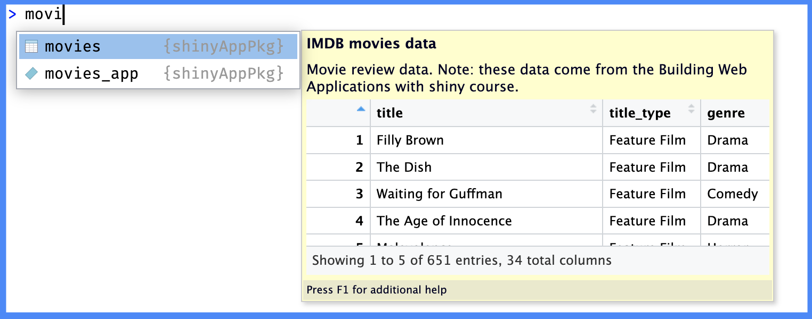
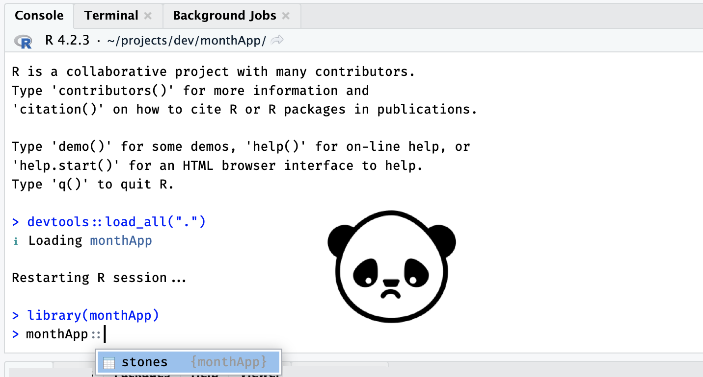
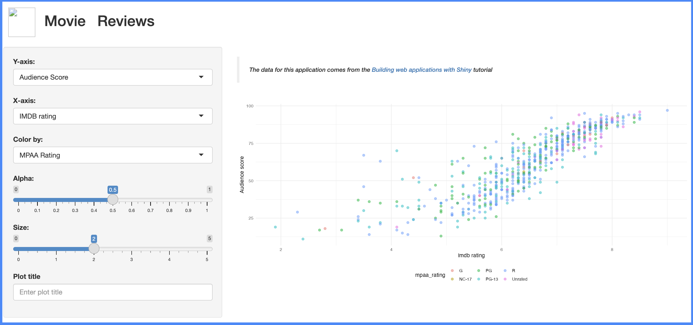

library(dplyr)
head(dplyr::storms)
## # A tibble: 6 × 13
## name year month day hour lat long status
## <chr> <dbl> <dbl> <int> <dbl> <dbl> <dbl> <fct>
## 1 Amy 1975 6 27 0 27.5 -79 tropi…
## 2 Amy 1975 6 27 6 28.5 -79 tropi…
## 3 Amy 1975 6 27 12 29.5 -79 tropi…
## 4 Amy 1975 6 27 18 30.5 -79 tropi…
## 5 Amy 1975 6 28 0 31.5 -78.8 tropi…
## 6 Amy 1975 6 28 6 32.4 -78.7 tropi…
## # ℹ 5 more variables: category <dbl>, wind <int>,
## # pressure <int>,
## # tropicalstorm_force_diameter <int>,
## # hurricane_force_diameter <int>Data files
Caution
This section is currently being revised. Thank you for your patience.
We’ve documented the functions in pkgApp and successfully managed the dependencies with the NAMESPACE and DESCRIPTION files. In this chapter, we’re going to cover how make the sure movie.RData file becomes part of pkgApp, and other locations for data files in app-packages.
App-package data
There are three folders used to store data in R packages: data/, data-raw/, and inst/extdata/. The folder you’ll use will depend on the format, accessibility, and intended purpose of the data file in your app-package.
The data/ folder
You can read more about the data folder in the ‘Data in packages’ section of Writing R Extenstions and the ‘Data’ chapter of R Packages, 2ed.
The primary location for app-package data is the data/ folder. Data objects in the data/ folder are available in the package namespace when it’s installed and loaded, and can be accessed with the package::data syntax. See the example below:
LazyData: true
Files in data/ should be in the .rda or .RData format. Data files become part of a package when they’re added to the data/ folder and LazyData: true is added to the DESCRIPTION file.
LazyData: true: the data is only loaded into memory if it is explicitly accessed by the user or a function in the package. Until then, only the dataset names is loaded. This practice user-friendly and is the default for most R packages.LazyData: false(or omitted): accessing a data file from the package requires explicitly loading it using thedata()function.
Below are the steps for adding movies to pkgApp:
-
Move the
movies.RDatafile into a newly created thedata/folder:::: {.cell}
pkgApp/ │ └──data/ └── movies.RData:::
-
Include
LazyData: truein theDESCRIPTIONfile (I’ve added it aboveImports:):::: {.cell}
Package: pkgApp Version: 0.0.0.9000 Type: Package Title: movies app Description: A movies data shiny application. Author: John Smith [aut, cre] Maintainer: John Smith <John.Smith@email.io> License: GPL-3 RoxygenNote: 7.2.3 Encoding: UTF-8 Roxygen: list(markdown = TRUE) LazyData: true Imports: shiny, ggplot2, rlang, stringr, tools:::
Load, document, and install.
Ctrl/Cmd + Shift + L
ℹ Loading pkgAppCtrl/Cmd + Shift + D
==> devtools::document(roclets = c('rd', 'collate', 'namespace'))
ℹ Updating pkgApp documentation
ℹ Loading pkgApp
Documentation completedCtrl/Cmd + Shift + B
In the Build pane, you’ll notice a few new ** data lines of output after adding data:
** data
*** moving datasets to lazyload DB
** byte-compile and prepare package for lazy loadingWe can check to see if movies has been included in pkgApp using the package::data syntax:

roxygen2movies is now part of pkgAppusethis::use_data()
If you’d prefer to store data using the .rda format, the usethis package has the use_data() function that will automatically store an object in data/ in the .rda format.
To use usethis::use_data(), we can load the movies data into the global environment with load("movies.RData"), then run usethis::use_data(movies):
usethis::use_data(movies)✔ Setting active project to '/path/to/pkgApp'
✔ Adding 'R' to Depends field in DESCRIPTION
✔ Creating 'data/'
✔ Saving 'movies' to 'data/movies.rda'
• Document your data (see 'https://r-pkgs.org/data.html')The Depends: field is added to the DESCRIPTION file with an R version (this ensures the data files will be loaded)
Depends:
R (>= 2.10)(this function will also add LazyData: true to the DESCRIPTION)
Mastering Shiny data example
If you happened to download, install and load the monthApp example from Mastering Shiny, you may have noticed the NAMESPACE was empty, but the data was exported from the package:

monthApp exportsData files in data/ don’t require roxygen2 tags to be included in a package namespace.
Documenting data/
Documenting data can be tedious, but it’s worth the effort if you’ll be sharing your application with collaborators. There are multiple ways to store the documentation for datasets. For example, we could create a data.R file in the R/ folder.
fs::file_create("R/data.R")In data.R, we provide a @title, @description, and @details for the data (with or without the tags), followed by @format:
#' @title IMDB movies data
#'
#' @description
#' Movie review data. Note: these data come from the [Building Web Applications with shiny course](https://rstudio-education.github.io/shiny-course/).
#'
#' @details
#' Read more about acquiring these data in the ['Web Scraping and programming' section of Data science in a box](https://datasciencebox.org/02-exploring-data#web-scraping-and-programming)
#'
#' @format@format
The text following @format is a one-sentence description of the data (with it’s dimensions).
#' @title IMDB movies data
#'
#' @description
#' Movie review data. Note: these data come from the [Building Web Applications with shiny course](https://rstudio-education.github.io/shiny-course/).
#'
#' @details
#' Read more about acquiring these data in the ['Web Scraping and programming' section of Data science in a box](https://datasciencebox.org/02-exploring-data#web-scraping-and-programming)
#'
#' @format A data frame with [] rows and [] variables:\describe & \item
Each variable (column) in the data is documented with a combination of \describe and \item (pay close attention to the curly brackets):
#' \describe{
#' \item{variable}{description}
#' }After closing the curly brackets in \describe, place the name of the data in quotes ("movies") on the following line.
Below is the documentation for the first five columns in the movies dataset:
#' @title IMDB movies data
#'
#' @description
#' Movie review data. Note: these data come from the [Building Web Applications with shiny course](https://rstudio-education.github.io/shiny-course/).
#'
#' @details
#' Read more about acquiring these data in the ['Web Scraping and programming' section of Data science in a box](https://datasciencebox.org/02-exploring-data#web-scraping-and-programming)
#'
#' @format A data frame with 651 rows and 34 variables:
#' \describe{
#' \item{title}{movie title}
#' \item{title_type}{type, fct (Documentary, Feature Film, TV Movie)}
#' \item{genre}{movie genre, fct (Action & Adventure, Animation, etc.}
#' \item{runtime}{movie length in minutes, num, avg = 106, sd = 19.4}
#' \item{mpaa_rating}{movie rating, fct (G, NC-17, PG, PG-13, R, Unrated)}
#' }
#'
"movies"If we load and document pkgApp, we can see a preview of the help file:
Ctrl/Cmd + Shift + L
ℹ Loading pkgAppCtrl/Cmd + Shift + D
==> devtools::document(roclets = c('rd', 'collate', 'namespace'))
ℹ Updating pkgApp documentation
ℹ Loading pkgApp
Writing movies.Rd
Documentation completed?movies
movies help filemovies datasetI’ve provided documentation for the full movies dataset below.
show/hide full movies data documenation
#' @title IMDB movies data
#'
#' @description
#' Movie review data. Note: these data come from the [Building Web Applications with shiny course](https://rstudio-education.github.io/shiny-course/).
#'
#' @details
#' Read more about acquiring these data in the ['Web Scraping and programming' section of Data science in a box](https://datasciencebox.org/02-exploring-data#web-scraping-and-programming)
#'
#' @format A data frame with 651 rows and 34 variables:
#' \describe{
#' \item{title}{movie title}
#' \item{title_type}{type, fct (Documentary, Feature Film, TV Movie)}
#' \item{genre}{movie genre, fct (Action & Adventure, Animation, etc.}
#' \item{runtime}{movie length in minutes, num, avg = 106, sd = 19.4}
#' \item{mpaa_rating}{movie rating, fct (G, NC-17, PG, PG-13, R, Unrated)}
#' \item{studio}{name of studio, chr}
#' \item{thtr_rel_date}{Theatre release date, POSIXct, min = 1970-05-19 21:00:00, max = 2014-12-24 21:00:00}
#' \item{thtr_rel_year}{Theatre release year, num, min = 1970, max = 2014}
#' \item{thtr_rel_month}{Theatre release month, num, min = 1, max =12}
#' \item{thtr_rel_day}{Theatre release day, num, min = 1, max =31}
#' \item{dvd_rel_date}{DVD release date, POSIXct, min = 1991-03-27 21:00:00, max = 2015-03-02 21:00:00}
#' \item{dvd_rel_year}{DVD release year, num, min = 1991, max = 2015}
#' \item{dvd_rel_month}{DVD release month, num, min = 1, max = 12}
#' \item{dvd_rel_day}{DVD release day, num, min = 1, max = 31}
#' \item{imdb_rating}{Internet movie database rating, avg = 6.49, sd = 1.08}
#' \item{imdb_num_votes}{Internet movie database votes, avg = 57533, sd = 112124}
#' \item{critics_rating}{Rotten tomatoes rating, fct (Certified Fresh, Fresh, Rotten)}
#' \item{critics_score}{Rotten tomatoes score, avg = 57.7, sd = 28.4}
#' \item{audience_rating}{Audience rating, fct (Spilled, Upright)}
#' \item{audience_score}{Audience score, avg = 62.4, sd = 20.2}
#' \item{best_pic_nom}{Best picture nomination, fct (no, yes)}
#' \item{best_pic_win}{Best picture win, fct (no, yes)}
#' \item{best_actor_win}{Best actor win, fct (no, yes)}
#' \item{best_actress_win}{Best actress win, fct (no, yes)}
#' \item{best_dir_win}{Best director win, fct (no, yes)}
#' \item{top200_box}{Top 20 box-office, fct (no, yes)}
#' \item{director}{Name of director, chr}
#' \item{actor1}{Name of leading actor, chr}
#' \item{actor2}{Name of supporting actor, chr}
#' \item{actor3}{Name of #3 actor, chr}
#' \item{actor4}{Name of #4 actor, chr}
#' \item{actor5}{Name of #5 actor, chr}
#' \item{imdb_url}{IMDB URL}
#' \item{rt_url}{Rotten tomatoes URL}
#' }
#'
"movies"Remove load()
After documenting the movies data in data.R, we’ll remove the call to load() in the mod_scatter_display_server() function and replace it with a direct call to the dataset:
mod_scatter_display_server <- function(id, var_inputs) {
shiny::moduleServer(id, function(input, output, session) {
inputs <- shiny::reactive({
plot_title <- tools::toTitleCase(var_inputs$plot_title())
list(
x = var_inputs$x(),
y = var_inputs$y(),
z = var_inputs$z(),
alpha = var_inputs$alpha(),
size = var_inputs$size(),
plot_title = plot_title
)
})
output$scatterplot <- shiny::renderPlot({
plot <- scatter_plot(
# data -----------------------------------------------------
df = movies,
x_var = inputs()$x,
y_var = inputs()$y,
col_var = inputs()$z,
alpha_var = inputs()$alpha,
size_var = inputs()$size
)
plot +
ggplot2::labs(
title = inputs()$plot_title,
x = stringr::str_replace_all(tools::toTitleCase(inputs()$x), "_", " "),
y = stringr::str_replace_all(tools::toTitleCase(inputs()$y), "_", " ")
) +
ggplot2::theme_minimal() +
ggplot2::theme(legend.position = "bottom")
})
})
}After loading, documenting, and installing the package, we see the following application:

movies_app() with movies data filepkgApp::movies in movies_app()
dplyr example
To illustrate other options for data documentation, we’ll use the dplyr package. dplyr stores its data in the data/ folder:
data/
├── band_instruments.rda
├── band_instruments2.rda
├── band_members.rda
├── starwars.rda
└── storms.rdaThe documentation for the datasets in dplyr are stored in R/ using a data- prefix:
R/
├── data-bands.R
├── data-starwars.R
└── data-storms.RThe three band_ datasets have documented in a single file, data-bands.R:
show/hide documentation for dplyr::band_ datasets
# from the dplyr github repo:
# https://github.com/tidyverse/dplyr/blob/main/R/data-bands.R
#
#' Band membership
#'
#' These data sets describe band members of the Beatles and Rolling Stones. They
#' are toy data sets that can be displayed in their entirety on a slide (e.g. to
#' demonstrate a join).
#'
#' `band_instruments` and `band_instruments2` contain the same data but use
#' different column names for the first column of the data set.
#' `band_instruments` uses `name`, which matches the name of the key column of
#' `band_members`; `band_instruments2` uses `artist`, which does not.
#'
#' @format Each is a tibble with two variables and three observations
#' @examples
#' band_members
#' band_instruments
#' band_instruments2
"band_members"
#' @rdname band_members
#' @format NULL
"band_instruments"
#' @rdname band_members
#' @format NULL
"band_instruments2"In the example above, note that two of the datasets (band_instruments and band_instruments2) have the @format set to NULL, and define the help search name with @rdname. The @examples tag can be used to view the dataset when users click ‘Run Examples’
Either method will–what’s important is that each dataset in your package has documentation.
Documenting data in
data/
Documenting data requires the following roxygen2 structure:
#'
#' @title single-sentence describing [data]
#'
#' @description
#' Single-paragraph describing [data]
#'
#' @format [data] number of rows and columns:
#' \describe{
#' \item{variable}{description}
#' \item{variable}{description}
#' }
#'
"[data]"Replace [data] with the name of your dataset.
The data-raw/ folder
The data-raw folder is not an official directory in the standard R package structure, but it’s a common location for any data processing or cleaning scripts, and the raw data file for datasets stored in data/.
Scripts for creating
movies data
The code used to produce the movies dataset in the data/ directory might* come from this GitHub repo. If so, the data-raw folder is where the data processing and preparation scritps would be stored (along with a copy of the data in .csv format) before saving a copy in the data/ folder.
*I say ‘might’ because it’s not clear if the movies.RData is the output from these .R files (although many of the column names match).
dplyr example
If we look at the data in the dplyr package again, we can see the data-raw/ folder contains a combination of .R and .csv files:
data-raw/
├── band_members.R
├── starwars.R
├── starwars.csv
└── storms.R
1 directory, 4 filesIn this example, the starwars.R script downloads & prepares starwars, then saves a .csv copy of the data in data-raw.
Read more about the data-raw folder in R Packages, 2ed
The inst/extdata/ folder
The extdata folder (inside inst/) can be used for external datasets in other file formats (.csv, .tsv, .txt, .xlsx, etc).
The data files in inst/extdata/ aren’t directly loadable using the package::data syntax or the data() function like with the data/ directory. These files can be imported using the file path accessor function, system.file().
For example, if we create the inst/extdata/ and save a copy of movies as a .fst file:
fst package v0.9.8fs::dir_create("inst/extdata/")
fst::write_fst(
x = movies,
path = "inst/extdata/movies.fst",
compress = 75)fstcore package v0.9.14
(OpenMP was not detected, using single threaded mode)Then load, document, and install pkgApp:
Ctrl/Cmd + Shift + L / D / B
We can import movies.fst using system.file() to create a path to the file:
tibble::as_tibble(
fst::read_fst(path =
system.file("extdata/", "movies.fst", package = "pkgApp")
)
)# A tibble: 651 × 34
title title_type genre runtime mpaa_rating studio thtr_rel_date
<chr> <fct> <fct> <dbl> <fct> <fct> <dttm>
1 Filly… Feature F… Drama 80 R Indom… 2013-04-18 21:00:00
2 The D… Feature F… Drama 101 PG-13 Warne… 2001-03-13 21:00:00
3 Waiti… Feature F… Come… 84 R Sony … 1996-08-20 21:00:00
4 The A… Feature F… Drama 139 PG Colum… 1993-09-30 21:00:00
5 Malev… Feature F… Horr… 90 R Ancho… 2004-09-09 21:00:00
6 Old P… Documenta… Docu… 78 Unrated Shcal… 2009-01-14 21:00:00
7 Lady … Feature F… Drama 142 PG-13 Param… 1985-12-31 21:00:00
8 Mad D… Feature F… Drama 93 R MGM/U… 1996-11-07 21:00:00
9 Beaut… Documenta… Docu… 88 Unrated Indep… 2012-09-06 21:00:00
10 The S… Feature F… Drama 119 Unrated IFC F… 2012-03-01 21:00:00
# ℹ 641 more rows
# ℹ 27 more variables: thtr_rel_year <dbl>, thtr_rel_month <dbl>,
# thtr_rel_day <dbl>, dvd_rel_date <dttm>, dvd_rel_year <dbl>,
# dvd_rel_month <dbl>, dvd_rel_day <dbl>, imdb_rating <dbl>,
# imdb_num_votes <int>, critics_rating <fct>, critics_score <dbl>,
# audience_rating <fct>, audience_score <dbl>, best_pic_nom <fct>,
# best_pic_win <fct>, best_actor_win <fct>, best_actress_win <fct>, …
# ℹ Use `print(n = ...)` to see more rowsWe’ll cover inst/ and system.file() in more detail in the next chapter.

Recap
It’s common for shiny apps to require data, so knowing how to store and access these files in your app-package will make it easier to load and reproducible in other environments. Here are a few other things to consider when including data in your app-package:
Recap: Package data files
data/: All data files stored indata/will be ‘lazy loaded’ (see below) when the package is installed and loaded.Loading: include the
LazyData: truefield in theDESCRIPTIONfile so the data is only loaded when it’s used (and it increases package loading speed).Size: large data files can inflate the size of your app-package, making it harder for users to download and install. CRAN also has a size limit for packages (if you plan on submitting your app-package).
Format: data files in
data/must be either.rdaor.RDataformat.-
Documentation: document the data/ files in either a single
R/data.Rfile or individual.Rfiles. Documentation should include the followingroxygen2format:#' #' @title #' #' @description #' #' @format #' \describe{ #' \item{variable}{description} #' } #' 'data' inst/extdata/: Store external data in theinst/extdata/directory and access it usingsystem.file(). This can be helpful if your app-package needs access to data files that are not R objects. For faster loading, consider thefstorfeatherformats.